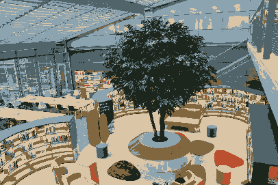
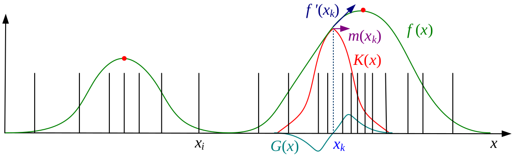
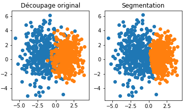
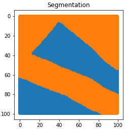
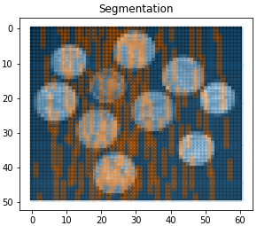

Presentation of two image segmentation techniques

Mean Shift
The Mean Shift algorithm is a non-parametric technique whose aim is to find local maxima in a high-dimensional data distribution without computing the latter. Therefore, the main issue is how to efficiently estimate a density function given a set of samples.
The simplest way is to smooth the data. A common technique to smooth data is to compute a kernel density estimation $f(\mathbf{x})$:
$$f(x) = \sum_{i \in \mathcal{I}} K(\mathbf{x}-\mathbf{x_i}) = \sum_{i \in \mathcal{I}} k\left(\dfrac{||\mathbf{x}-\mathbf{x_i}||^2}{h^2}\right)$$
where $(x_i)_{i \in \mathcal{I}}$ are the input samples, $k$ the kernel function and $h$ the kernel width. Then, we can find $f(x)$ maxima with usual optimization techniques (e.g. gradient ascent).
However, $f(x)$ computation can have a too high complexity in high dimensional spaces. Thus, mean shift becomes useful. The algorithm uses a technique called multiple restart gradient descent, starting from $y_0$ and iterating under the following procedure (where $G$ is associated with the kernel function $g(r)=-k'(r)$):
$$\mathbf{y}_{k+1} = \mathbf{y}_k + \mathbf{m}(\mathbf{y}_k)$$
$$\text{with} \quad \mathbf{m}(\mathbf{x}) = \dfrac{\sum_{i \in \mathcal{I}} \mathbf{x_i}G(\mathbf{x}-\mathbf{x_i})}{\sum_{i \in \mathcal{I}} G(\mathbf{x}-\mathbf{x_i})} - \mathbf{x} \quad \text{called the mean shift vector}$$

It has been proven that this algorithm converges if the kernel $k(r)$ is monotonically decreasing. Two kernels commonly used for the mean shift algorithm are the Gaussian kernel, and the Epanechnikov kernel, whose formula is $k_{E}(r) = \max(0,1-r)$. Therefore, the simplest way to apply mean shift algorithm is to use the above gradient procedure at every input point $x_i$, in order to find all local maxima.
In image segmentation, mean shift algorithm is generally used taking into account spatial coordinates and color of pixels, as with the bilateral filter, through a kernel of the form:
$$K(\mathbf{x_i}) = k\left(\dfrac{||\mathbf{x_r}||^2}{h_r^2}\right)k\left(\dfrac{||\mathbf{x_s}||^2}{h_s^2}\right)$$
where $\mathbf{x_s} = (x,y)$ are the spatial coordinates (spatial domain), $\mathbf{x_r}$ is the color value (range domain), $h_s$ (resp. $h_r$) the spatial (resp. range) bandwith.
Normalized Cut
The Normalized Cut algorithm is an efficient way to segment an image. This algorithm is based on a graph representation of the image: pixels are vertices and weights (edges) depend on the image (brightness, intensity, distance or whatever can be useful to segment the image). The vertices could be just a subset of pixels like points of interest.
Once the graph is computed, the problem is to cut vertices into two disjoint subsets $A$ and $B$ such that weights from A to B, $cut(A, B) = \sum_{u \in A, v\in B} w(u, v)$ is minimal. Unfortunately, algorithms tend to make unbalanced sets ($cut(A, B)$ is smaller if $A$ contains only one element). The idea for this algorithm is to normalize the cut:
$$N_{cut}(A, B) = \frac{cut(A, B)}{assoc(A, V)} + \frac{cut(A, B)}{assoc(B, V)}$$
where $assoc(A, V) = \sum_{u \in A, t \in V} w(u, t)$.
It has been proven in reference 1 that the normalized cut is equivalent to find the eigenvector with the second smallest eigenvalue for:
$$(D - W)x = \lambda Dx$$
where, if $N = |V|$, $W \in \mathbb{R}^{N\times N}$ is the weight matrix and $D \in \mathbb{R}^{N\times N}$ is the diagonal matrix where $D(i, i) = \sum_j w(i, j)$. Signs of the second eigenvector $x$ decide on the cut ($i \in A$ iff $x(i) > 0$).
Our results:
We decided to test this algorithm. Firstly, we worked on a set of points in $\mathbb{R}^2$ and we made a graph where vertices are points and weights are $w(x,y) = ||x - y||_2^{-1}$. We obtained the segmentation shown in the left figure below, which give good results (the algorithm did not know the colors / the labels of the points). Then, we decided to work on artificial images and we found two main issues:
- How can we make efficiently (in Python) the graph from the image?
- How can we speed up the algorithm (because the complexity is $O(N^3)$ where $N = |V|$, $N = 10^6$ for a $1000\times 1000$ image)?
To solve the first issue, we decided to make a graph only based on colors, i.e. $w(x, y) = np.abs(I(x) - I(y))$. To solve the second one, we used a sparsed matrix. We obtained great results for two artificial black and white images but results are awful for real images. Therefore the idea is to change our graph representation.



References
- Shi, J., & Malik, J. (2000). Normalized cuts and image segmentation. IEEE Transactions on pattern analysis and machine intelligence, 22(8), 888-905.
- Szeliski, R. (2010). Computer vision: algorithms and applications. Springer Science & Business Media.